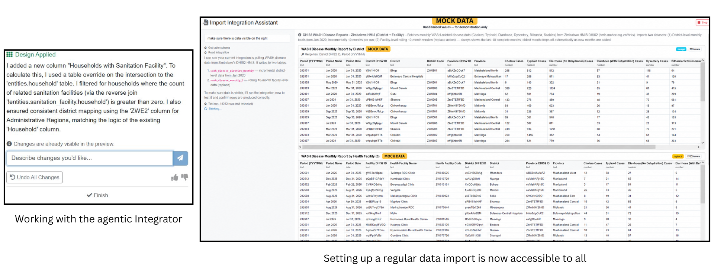
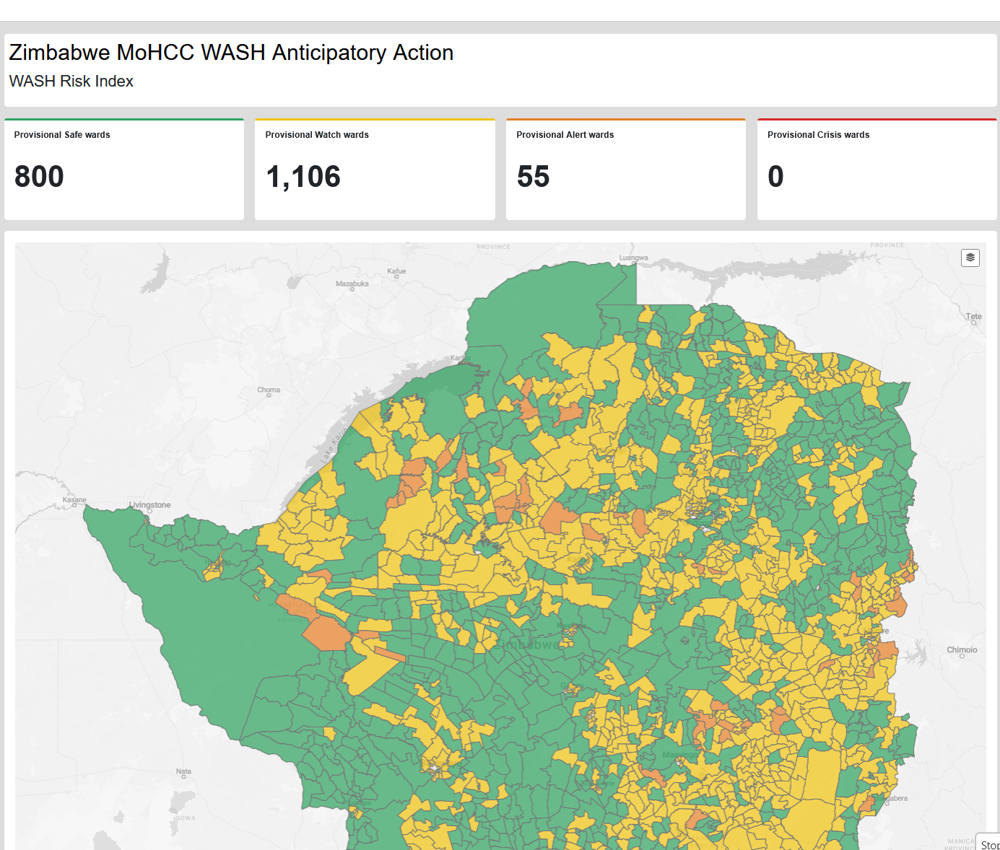
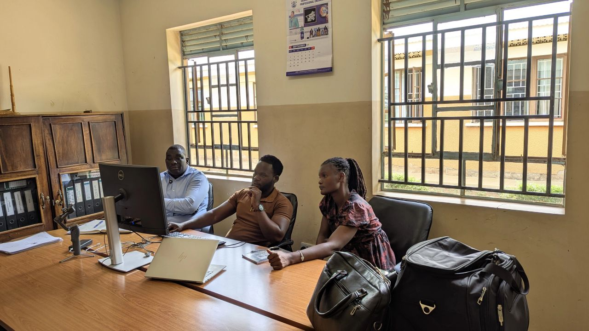
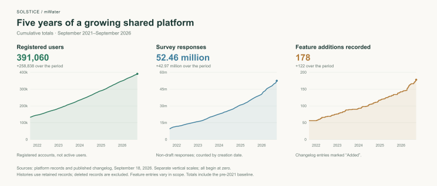

In Zimbabwe, Admire wanted to see sanitation coverage next to Water, Sanitation and Hygiene (WASH)-related disease data. Both existed, one in DHIS2 and one in mWater, but the geographic names did not match and the comparison needed calculations neither dataset supplied. He used mWater's AI-assisted integration tools to set up a monthly import of the health metrics out of DHIS2, then worked with Codex through the Model Context Protocol (MCP) to reconcile the names.

One mapping was a bit too complex for the assistant to immediately handle. Admire worked one example by hand using his domain expertise, and the assistant extended it across the table, and the import runs smoothly underpinning many operational dashboards.
When we introduced Solstice in 2021, we argued that health and water information need to connect where the responsibilities of those sectors meet. Admire's work is one practitioner doing exactly that, five years on. The WASH Anticipatory Action command console does it at scale, bringing the same kinds of information together to guide proactive health interventions.
This is what I mean by operationalization: closing the distance between a process someone can describe and one they can actually run. For an institution, running it dependably also means settling who maintains the information and how its findings reach decisions. Solstice provides the tools for connecting those parts of the work. Our software is used worldwide, but what the work is for is decided by the people doing it, not by us.

Giving people more control
Democratization means more than broader access. It becomes real when people can shape a system and use it to pursue their own questions. Admire's example is one of many I’ve seen working directly with governments and it shows AI carrying an intention through technical steps that would otherwise have needed more time or a specialist.
In our July AI strategy, I outlined how recent updates have upgraded pathways for users to have more control than ever. AI tools in Solstice now help people clean records, connect systems, and build reports using their own data. Through our MCP connection, compatible assistants work within the user’s existing permissions. People bring the questions and contextual knowledge, inspect the results, and decide which proposed changes to accept.
By September 2026, users outside our staff groups had made more than 22,000 MCP tool calls, and more than 500 accounts had used the platform’s AI to design charts and maps. Those users tell us about days and weeks of time saved. Crucially, they also tell us their ambitions have grown. Once someone has watched thousands of records cleaned accurately, or an integration built that used to need outside help, reaching for the next thing gets easier. At a technical level, everyone may now become a superuser, but it is at the institutional level where this really begins to matter.
Connecting institutional responsibilities
In Angola, the cholera response put case locations on the same map as water points and health centers. The institutions involved included the ministries responsible for Water and Energy, Environment, and Civil Protection, along with provincial governments. Each read the same map through its own mandate. The published account describes how that shared view was built.
A map like that works only if the institutions agree on a few things and decide the rest for themselves, becoming useful when institutions can interpret its information consistently. Geographic references let them view records together; shared identifiers and agreed definitions help them connect and compare those records. Agreeing on definitions and responsibilities lets institutions use the same information without everyone doing the same job.
And what happens after a map is drawn? A provincial team notices a water point in the wrong place. Does the correction reach the national dataset, and who checks it first? Then a new cluster of cases appears. Which institution decides that it calls for a joint response, and on what evidence? The software does not settle these questions for you. The institutions do that, and the map is only as useful as those agreements.
We made the same argument for development monitoring generally in SDG and development monitoring. A national plan sets goals for health, education, and public services, and the SDGs give it a shared framework for reporting on them. The records behind those reports matter most between reporting deadlines, when a district manager uses them to find a facility missing a service and assign someone to fix it. The same record should later tell the ministry whether anything changed. It is the people maintaining the record and acting on it who make a figure useful.
What makes capability last
Progress means people and institutions gaining the practical ability to shape their own future. That capacity grows through arrangements people build together. Systems and platforms should not depend on any single individual, no matter how dedicated. A district manager pursues an ambition more effectively when colleagues know their responsibilities, the information can be legitimately trusted, and there is a budget to draw on. Institutions give individual intentions continuity. They also need ways for people to question and change the arrangements they work within.
Configuring software forces those arrangements into the open. Who exactly can correct a facility record? Who reviews a reported failure, and who can authorize the money to fix it? What counts as proof that it was fixed? Marking a task complete is useful when completion has an agreed meaning. A reminder can keep arriving every week for a task nobody has the resources to complete. It gives the institution a missing budget line or an unclear line of authority to resolve, before the software repeats the same problem every week. That means sometimes the missing feature is a decision nobody has made yet.

I increasingly think capability lives in those arrangements more than in any single trained administrator. Training matters, but so do budget lines, review rights, named responsibilities, and time set aside for the work. This is what we as organization can facilitate in partnerships on top of the software we build. It has been satisfying to watch software give a local ambition a structure it can grow in, and through that process shake our own assumptions.
Institutions often take the platform in directions we did not plan, and I take that as a merit. World Vision's WASH team and its Farmer Managed Natural Regeneration team built a shared environmental monitoring framework in Solstice, and World Vision's own account describes how experience from one program carried into the other. UNICEF Madagascar funded the development of Workflows for its MGMERL program, and we released the feature to every user, as we do with all of our features. An investment in one monitoring program becomes a tool for assignments, reviews, and follow-up across the platform.
So in a larger view, I would judge our contribution by what teams become able to sustain. Can they revise a process without calling us? Can they bring new colleagues into it, and keep it running after the person who set it up moves on? Can they recognize when the system needs to change, and organize that change themselves? The ambition was always theirs and our part is to help it take a form they can operate, adapt, and make their own.
Head of Product, mWater and Solstice

Do you have an impactful story to tell related to this? Contact us at info@solstice.world.
Further reading
Examples of sustained work at three scales:
- National: Papua New Guinea's national WASH monitoring system. Government-led development of shared indicators, reporting processes, and an information system connecting national institutions, districts, and partners.
- District: The Pader Project, Uganda. Local young people trained to map water infrastructure, building data skills while improving the information available to district and national authorities.
- Utility: Yme Jibu, Democratic Republic of Congo. Customer records, billing, operational monitoring, and accounting brought together so a utility can coordinate work across several sites.
Articles and videos:
SDG and development monitoring: connecting national goals with daily decisions